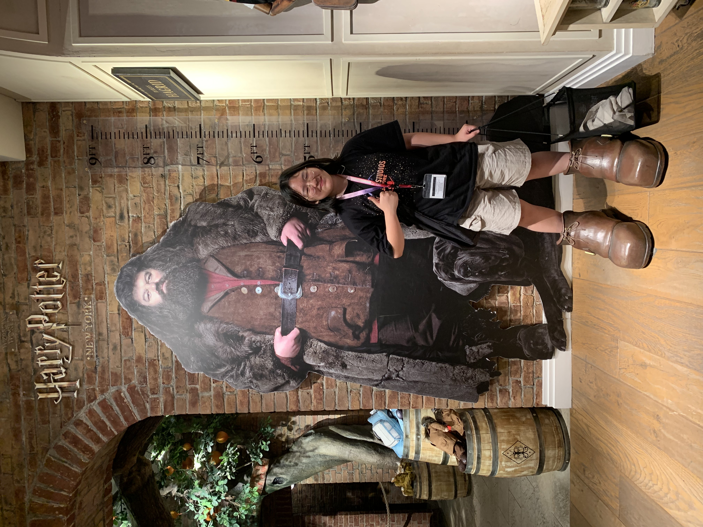
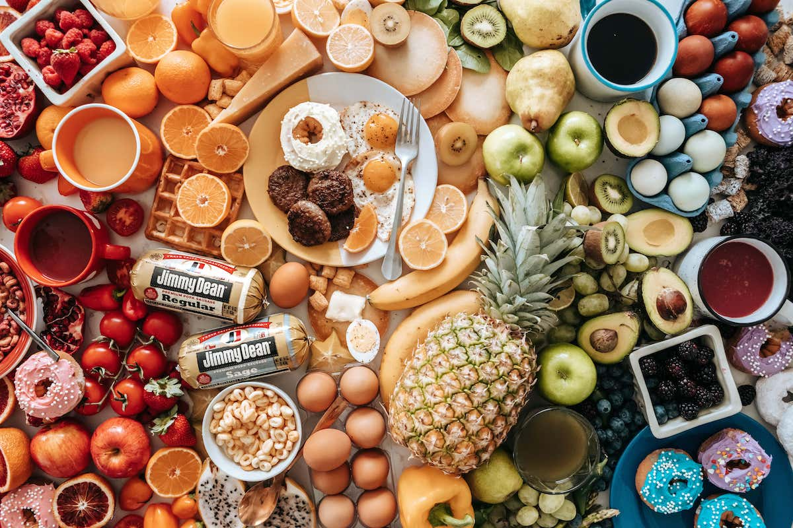

Selamat datang di web pertama saya
Biodata Diri
Nama: Nicole Cecilia
Tempat lahir: Jakarta
Tanggal lahir: 3 November 2009
Email: nicocecilia.fajar@gmail.com
Hobi: baca buku

Makanan kesukaan: apa aja yang bisa dimakan
Moto: yolo aj
Instagram: @nikol_fjr